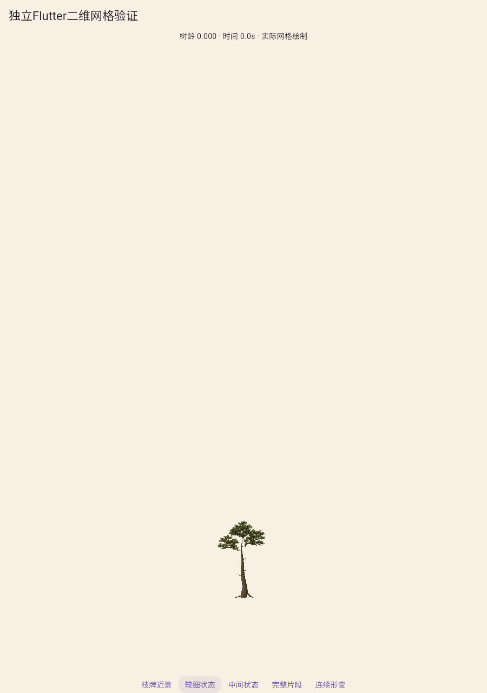
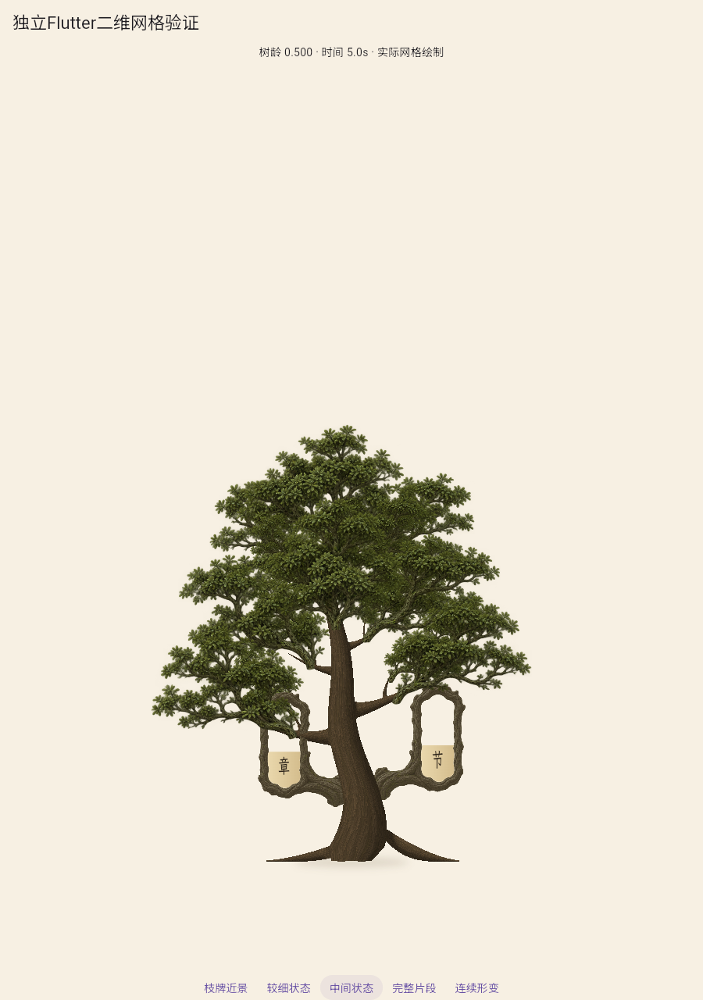
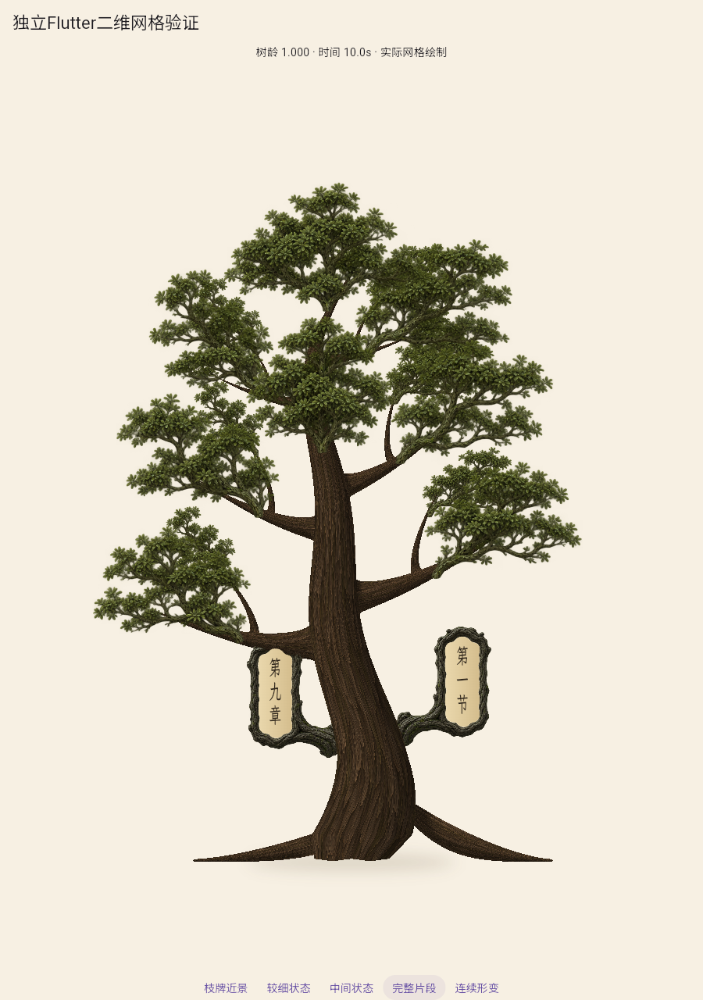
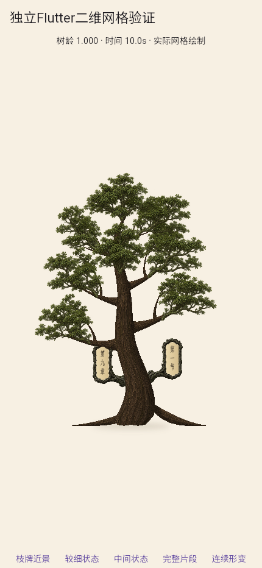
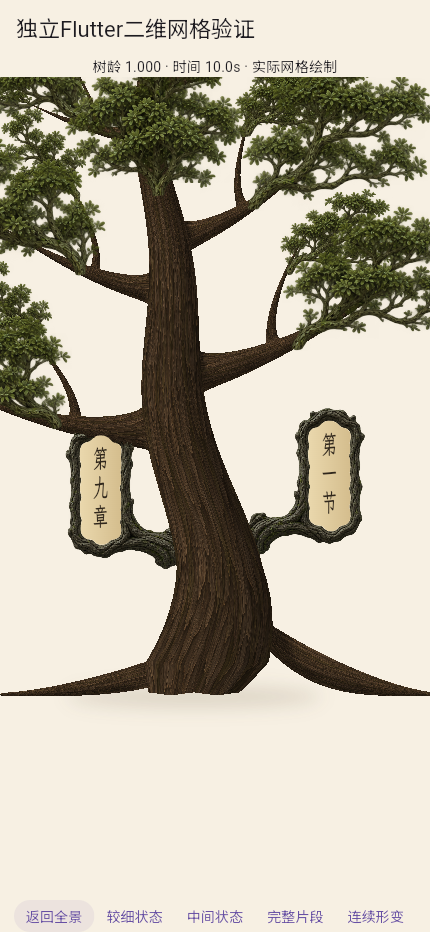

共享发育完整第二套：视觉拒绝
幼冠、曲干、贴地和承托方向改善，成熟分层、扁薄根形及近景木质仍未达标。两轮已用完，停止本造型第三轮调参；A2未通过。
完整审查 · 实际运行与源哈希 · 共边及图集挂点 · 完整区间安全 · 成熟纸面填合 · 接头反例 · 方向错误复现 · 已修复的方向错误中间产物
批准参考 幼苗
幼苗
中龄
成熟
浏览器手机视口
实际枝牌近景
900×1280固定相机，101个实际Flutter状态，显示年龄和时间。10fps为编码帧率；430×932是浏览器视口。内置image_gen树皮材质及提示词说明